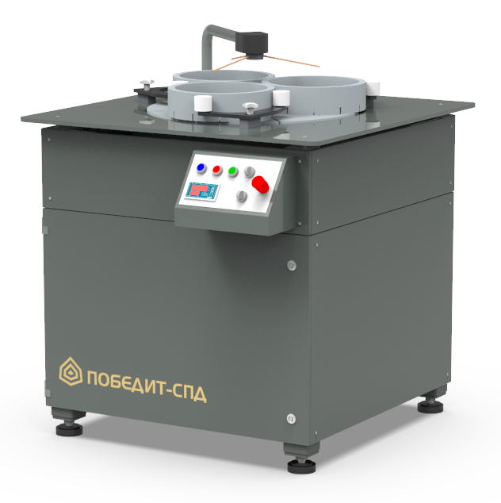

ПОБЕДИТ-СПД
Станок предназначен для притирки уплотнительных поверхностей клиньев задвижек, золотников вентилей, шиберов, седел, тарелок клапанов и др.
Станок предназначен для притирки уплотнительных поверхностей клиньев задвижек, золотников вентилей, шиберов, седел, тарелок клапанов и др.
| Параметры | ПОБЕДИТ-СПД-600 | ПОБЕДИТ-СПД-1000 | ПОБЕДИТ-СПД-1200 |
|---|---|---|---|
| Диаметр притира, мм | 660 | 1060 | 1260 |
| Достижимая плоскостность, мкм | До 0,6 | До 0,6 | До 0,6 |
| Шероховатость обрабатываемой поверхности, мкм | До 0,05 | До 0,05 | До 0,05 |
| Установленная мощность, кВт | 3,0 | 7,5 | 8,5 |
| Частота вращения притира, об/мин | Регулируемая | Регулируемая | Регулируемая |
| Габаритные размеры, мм | 895х1045х1100 | 1450х1300х1320 | 1800х1600х1320 |
| Масса, кг | 800 | 1250 | 1700 |